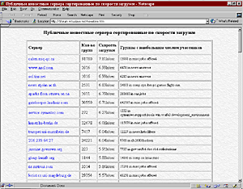
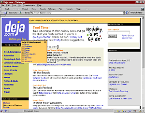
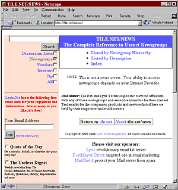
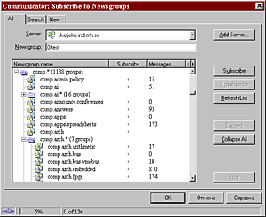
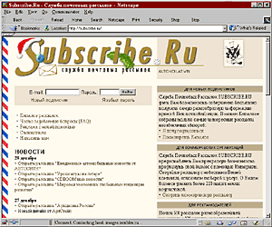

Бесплатный сыр без мышеловок (телеконференции и почтовые рассылки)
Алексей Панишев
Источников информации в Сети множество. Порой даже кажется, что их слишком
много. "Но для чего же тогда существуют Yahoo!, Altavista, Rambler?" - вопрос, казалось бы, резонный. Однако не так уж
все и просто. Если вам хоть раз приходилось искать какую-нибудь полезную
информацию в Internet, то вы знаете, как это трудно. Дело отнюдь не в сложности
самого процесса: современные поисковые системы очень хороши. Они действительно
способны находить в глубинах виртуального пространства самые ничтожные крупицы
данных. Вся беда в том, что ответы на ваши запросы, как правило,
избыточны.
Очень уж часто результаты работы поисковых машин содержат множество ссылок на
не полностью устраивающие вас, а то и попросту лишние ресурсы Сети. Как бы ни
были совершенны Yahoo!, "Апорт" и им подобные, до идеала им
далеко. Идеал поиска - это когда в ответ на ваш запрос выдается всего один
ответ, зато именно тот, который с самого начала и требовался. Самое обидное, что
ответы-то в Сети есть. Есть большое количество людей, многого достигших в своей
области, которые, может, и рады были бы поделиться информацией с вами, но как их
отыскать? Вот хорошо было бы устроить так, чтобы нужные сведения сами находили
дорогу к пользователю!
Звучит фантастически даже для нашего времени? А вот и нет! Оказывается, такой
сервис в Internet есть. Более того, он имеет очень давние (по Сетевым меркам)
традиции, богатую историю и множество приверженцев. Речь идет о мире
телеконференций Usenet (или группах новостей, ньюс-группах) и почтовых рассылках
- о тех технологиях, которым начинающие пользователи Internet уделяют, как
правило, незаслуженно мало внимания. А ведь придуманы все эти службы именно для
того, чтобы облегчить повседневную жизнь охотящегося за информацией в Сети
человека. Их смысл - автоматизированный обмен сведениями между пользователями,
причем эти сведения изначально упорядочены по тематике.
Usenet - это совокупность разбросанных по всему миру компьютеров, которые
обмениваются информацией (в виде так называемых статей, articles, аналогичных
электронным письмам). Статьи, разумеется, сочиняют и отвечают на них реальные
люди - подписчики Usenet. Именно в упорядоченности информации скрывается мощь
этой системы. Если пользователя интересует, скажем, начальная настройка систем
ПК под управлением OC Red Hat Linux, то он подписывается на конференцию linux.redhat.setup. Возможно, этот вопрос уже
обсуждается там, - тогда достаточно прочитать, что пишут более опытные люди. А
если нет, то всегда можно задать вопрос самому и быть уверенным, что на него
ответят, причем основываясь на собственном реальном опыте, что немаловажно.
Началась история Usenet в 1979 г., когда в одном из университетов Северной
Каролины была организована сеть из трех компьютеров под управлением операционной
системы UNIX, предназначенная для обмена текстовыми сообщениями. Создали ее
несколько молодых ученых, и в первое время рост сети происходил именно за счет
компьютеров высших учебных заведений. Именно тогда оформились основные признаки
системы новостей Usenet:
- Распределенность: новости не хранятся на одной или нескольких определенных
машинах; они передаются от компьютера к компьютеру. На это уходит, конечно,
дополнительное время, но зато скорость связи конечных пользователей с
локальным узлом оказывается высокой.
- Свобода: новости никто не контролирует. Вы сами можете создать список
нежелательных для вас тем на своем компьютере - и не будете получать
соответствующие сообщения. Но это зависит только от вас. Существуют и
модерируемые (цензурируемые) группы новостей, но никто вам не мешает создать
свою, альтернативную, и самовыражаться в ней свободно.
- Саморегуляция: общение в группах новостей - это общение с множеством
реальных личностей разной степени терпимости, уравновешенности и выдержки.
Волей-неволей всем приходится соблюдать элементарные правила вежливости (так
называемый сетикет - этикет в Сети). Иначе с тем, кто постоянно досаждает
сообществу, попросту никто не будет общаться, а переругавшаяся конференция
рассыпется. Для любителей же словесных пикировок существуют специальные
подписки, в которых можно всласть попереругиваться с настоящими
профессионалами этого дела.
С тех давних пор техника и программное обеспечение сильно развились, но дух
телеконференций Usenet сохранился. В них, как правило, доброжелательно относятся
к новичкам, потому что каждый сам когда-то был новичком. В них всякий раз
найдется кому ответить даже на самый наивный вопрос. В самом крайнем случае,
здесь всегда дадут ссылку на полное и подробное описание проблемы, если оно уже
есть где-то в Сети. Сообщество Usenet самоорганизующееся; у него нет
центрального управления. Это, наверное, и есть наиболее близкий к идеалу пример
демократического устройства коллектива, пусть и виртуального.
Чтобы включиться в обмен новостями и стать полноценным членом сообщества,
достаточно установить на своем компьютере клиентскую программу и наладить связь
с одним из серверов Usenet. Еще раз хочется уточнить, что Usenet не представляет
собой какой-то специализированной сети, параллельной, скажем, Internet или
"Фидо". Узлы Usenet - обычные узлы Сети, просто на них в числе прочего
программного обеспечения установлена серверная часть ПО обмена новостями.
Человек, отправляющий сообщение в группу новостей (на жаргоне это называется
"послать пост", от английского post - отправка сообщения), просто нажимает
соответствующую кнопку в интерфейсе своей клиентской программы. Программа
соединяется с сервером Usenet, передает сообщение ему, а дальше уже он сам
оповещает известные ему серверы о пополнении в группе... и так далее по всему
земному шару.
А чтобы пользователь не потерялся в огромных потоках информации, наводняющей
Usenet, распространяемые в системе новости структурируются в категории "по
интересам". Скажем, категория comp посвящена всему связанному с компьютерами,
soc - социальным вопросам, sci - науке и т. д. Получается целая иерархия, по
которой вы можете точно определить область своих пристрастий, переходя от самых
общих категорий к более конкретным.
Если же вы ставите перед собой задачу не просто попользоваться уже имеющимися
в Usenet данными, а поднять какой-то совершенно новый вопрос, создать свою
собственную телеконференцию, то вам - прямая дорога в категорию alt. Прежде
всего, изучите ее внимательно: здесь можно отыскать массу самых различных
направлений. Дело в том, что обычный порядок создания своей подкатегории
новостей (в стандартных категориях) довольно-таки сложен. А в alt это сделать
гораздо проще - для того она и предназначена.

Cтраничка со списком серверов Usenet, отсортированным
по скорости загрузки. Речь не идёт о том, насколько быстро тот или иной сервер
способен выдавать информацию. Возможно, что какие-либо из <быстрых> серверов
окажутся лично для вас медленными, и наоборот.
Разумеется, как во всякой самоорганизующейся системе, в группах новостей
Usenet присутствуют и механизмы сдерживания. Так, всего категорий рассылок более
20 тыс. (точнее подсчитать невозможно), и ни один реальный физический сервер не
в состоянии полностью отследить их все. Поэтому серверы, как правило,
ограничиваются некоторым (хотя и достаточно большим) набором категорий. И тогда
пользователю, не нашедшему на ближайшем сервере Usenet необходимой рассылки,
надо обращаться к другому компьютеру. Списки ссылок на соответствующие серверы,
отсортированные по количеству поддерживаемых категорий, можно изучить на этом сайте, а
отсортированные по скорости загрузки информации - на этом.
net/newstime.htm. Можно заняться поиском и напрямую, например через систему TILE.NET/NEWS.
Если же вы пока не знаете, что именно в группах новостей вам необходимо, но
чувствуете, что что-то необходимо точно, - отправляйтесь на специализированный
сервер поиска по группам новостей вроде http://www.dejanews.com/. Зарегистрируйтесь в разделе MyDeja,
и вам станет доступен полный перечень поддерживаемых на сервере конференций. Он
очень обширен и включает практически все сферы человеческих интересов.
Подписавшись на те или иные категории (подкатегории), вы впоследствии сможете
заходить на сервер и читать новые сообщения, появляющиеся на них, примерно так
же, как вы читаете свою электронную почту на бесплатных почтовых серверах.

Сервер Deja.com -
наиболее полный и хорошо организованный обзор телеконференций. Очень полезен
тем, что позволяет делать поиск по всем конференциям сразу. Задав такой поиск по
интересующим вас ключевым словам, вы сможете, во-первых, получить найденные
Deja.com статьи, не подключаясь к Usenet, а во-вторых - определить конкретные
категории, на которые в будущем стоит, возможно, подписаться.
Есть, конечно, и более удобные способы доставки новостей на ваш персональный
компьютер. Специальные программы, которым можно задать имя сервера и список
категорий, сами займутся отслеживанием обновлений. В качестве примера можно
привести свободно распространяемые программы Free Agent компании Forte, Inc. и News Grabber
производства Trontech Pty
Ltd. Кроме того, в давно привычные всем броузеры - Netscape Communicator и
Internet Explorer - также встроена поддержка новостных серверов. (В IE
используйте меню Сервис - Учетные записи - Новости - Добавить, а в NC - меню
Edit - Preferences - Mail & Newsgroups - Newsgroup Servers.) Достаточно
только зарегистрироваться на сервере Usenet, а уж доставка сообщений не составит
труда. Просто каждое утро не забывайте запускать соответствующую программу и
скачивать новые сообщения в конференциях, на которые вы подписаны.

Данный сервер позволяет вести поиск конференций и в
конференциях.
Помимо Usenet, существуют и более привычные (для современного пользователя
Internet) способы подписки на самые свежие новости. Называется это "почтовой
рассылкой": на каком-нибудь сайте, где такая услуга реализована, вы оставляете
свой почтовый адрес. И затем по этому адресу вам приходят централизованно
отправляемые письма. Это могут быть сообщения об обновлениях и
усовершенствованиях каких-то программ, или последние новости из мира музыки, или
обзоры Internet по определенной тематике...

Примерно так выглядит процесс сбора информации с
сервера Usenet клиентской программой, встроенной в Netscape Communicator. Видна
иерархия категорий, напротив каждой категории указывается число непрочитанных
сообщений.
Существуют в Сети сайты, специально посвященные организации почтовых рассылок
на самые разные темы. Наиболее известна в России служба почтовых рассылок
сервера "Городской Кот".
Практически каждый желающий может завести там свою рассылку, и ежедневно их
добавляется по несколько наименований. Поищите, и вы непременно найдете там
что-нибудь интересное для себя. Сообщения по выбранным темам будут приходить в
ваш почтовый ящик в виде обычных электронных писем. Некоторые рассылки
поддерживают отправку ответов их участников в общий поток, некоторые - нет; все
зависит от настроек сервера и предпочтений хозяина (модератора) рассылки.

Cервер Subscribe.Ru. Здесь вы можете подписаться на существующую
почтовую рассылку или завести свою собственную.
Internet действительно обладает огромными возможностями для поиска
информации. Более того, используя телеконференции Usenet и почтовые рассылки,
можно добиться, чтобы нужные сведения сами находили вас. Не стоит пренебрегать
такой возможностью. Ведь тогда вы сэкономите массу времени на общении с
поисковыми машинами, заведете новых знакомых по всему миру, сможете сами принять
участие в дискуссиях и выслушать разные точки зрения по интересующему вопросу...
"Один ум хорошо, а два лучше". А уж полный умов Internet наверняка решит любую
проблему!